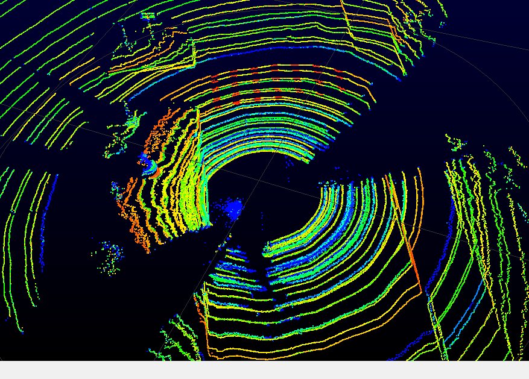
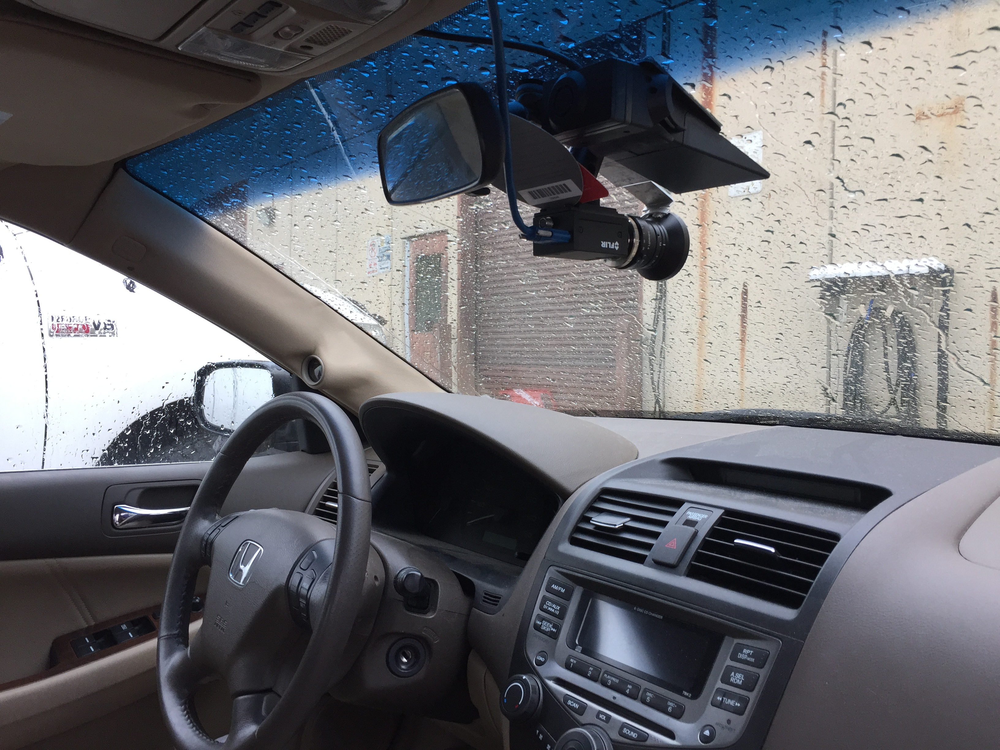
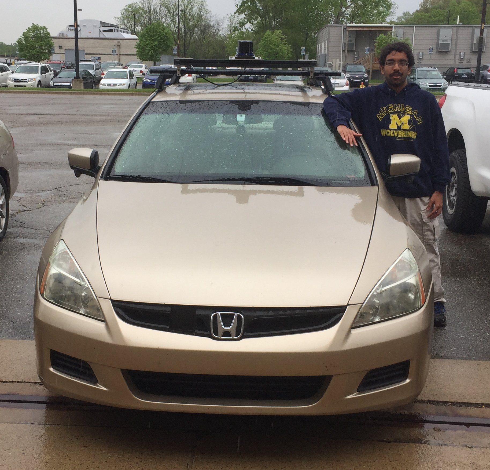
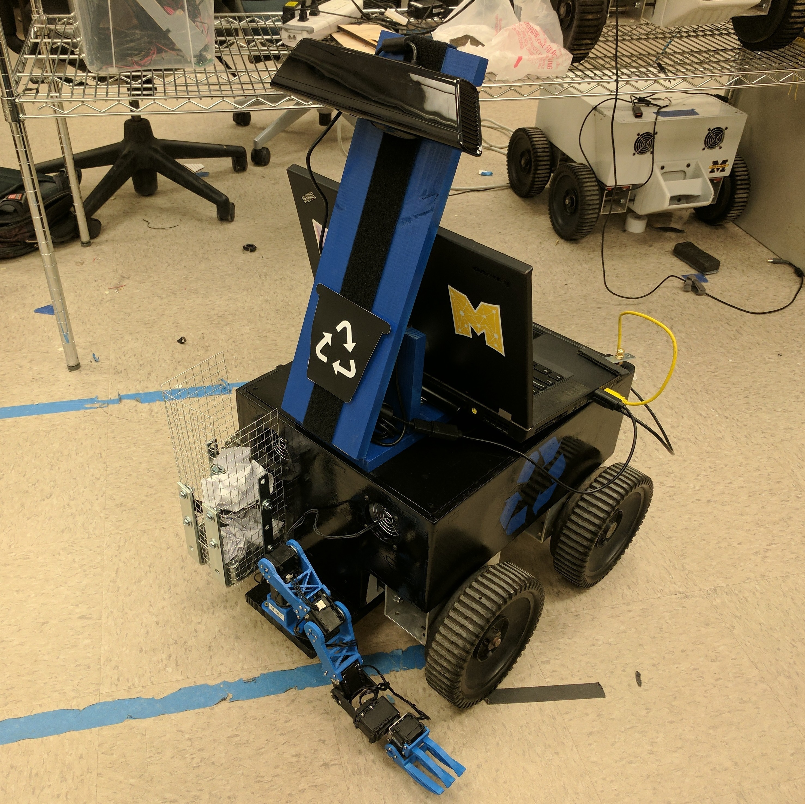
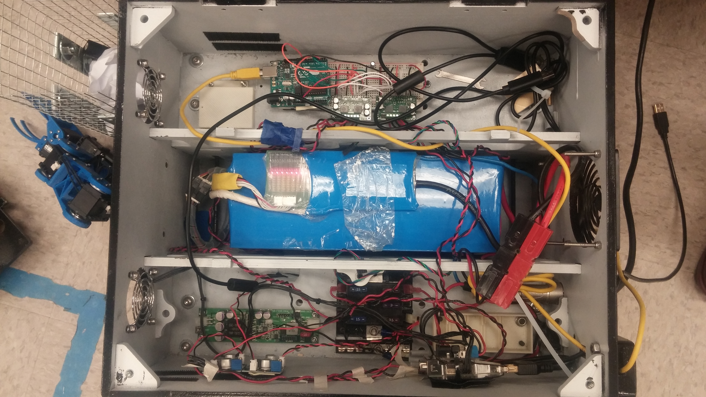

I am an aspiring roboticist with a background in software development and mathematics. I pursued my bachelors in computer science and my masters in electrical and computer engineering at the University of Michigan in Ann Arbor, MI.
My first name Ajaay is a modification of the Indian name Ajay. I respond to many pronunciations of it and have no preference for any of them. The most common pronunciations are Ay-Jay (AJ), Uhh-Jay, and Uhh-Jie.
My last name Chandrasekaran is based on the Indian name Chandrasekhar. I pronounce it as Chan-dra-say-ker-in.
Projects
MDOT Lane Marking Evaluation
[Code]


As a research assistant at the University of Michigan Transportation Research Institute in Ann Arbor, MI, I worked under Dr. Daniel Park on a project to evaluate the effectiveness of various road lanemarking materials. The project was funded by the Michigan Department of Transportation (MDOT).
In 2017, a section of the US-23 highway between Ann Arbor, MI and Brighton, MI was paved with different lanemarking materials along different stretches. We planned to perform a study over a 2-year period to determine how well each lanemarking material on the highway lasted over time; we expected that the different stretches of the highway would be impacted similarly by various environmental factors, such as temperature and precipitation.
To achieve our goal we required a method to take measurements of the lanemarkings' conditions on the US-23 highway once during each month so that after the 2-year period we could retrospectively analyze how the lanemarkings' conditions changed over time. Our solution to this problem was to equip a Honda Accord car with various sensors, including:
We proceeded to then engineer a software system that would be executed on the car to collect data of the road conditions from each of these sensors while a human operator drove the car along the US-23 highway once each month.

For this project, I developed multi-threaded C++ code utilizing the VTK and PCL libraries to extract, interpret, and visualize data collected from our Lidar. We experimented with two Lidar's: The Quanergy M-8 and the Velodyne HDL-64E. Each of these Lidars outputs [x,y,z] point clouds of their surroundings as well as point intensities. We were mostly interested in examining the point intensity measurements of the landmarkings. In theory, we could see how the intensity values of the points representing lanemarkings changed over time. The degradation of the highway pavement by the Michigan weather would result in lower intensity points returned by the Lidar for various lanemarking materials.
I also developed C++ code to interface with our car's Mobileye unit via the vehicle's CAN message network. The Mobileye communicated data regarding the status of the left and right lanemarkings on the road in front of the driver. Its data arrived in real time as a sequence of bytes that needed to be converted into a human readable format.
Finally, I facilated the collection of data from all four of our sensors simultaneously by helping to create a single module that would run all four sensor collection programs together as individual threads of a single CPU process. The module ran on a single HP i7 laptop during each of the car's monthly drives.
I was very proud of our final software system. This project necessitated a wonderful combination of both robotics and computer science knowledge.
For my Motion Planning course, I devised and implemented a Gaussian Mixture Model-based algorithm in C++ to expand upon existing methods to estimate the probability that a robot following a pre-generated motion plan would collide with an obstacle.
The motivation for this work is that a robot can benefit from quantifying the approximate safety of a motion plan before executing it. While a motion planner should generate a collision-free path, collisions may be possible as the robot follows the path due to natural uncertainty in the data it receives from its sensors and random noise in how it makes movements. Given a probability of collision before executing a motion plan, a robot can either execute it or revise the plan until it can find a "safer" plan.
Existing methods to compute the exact probability of collision for a motion plan rely on running thousands of Monte-Carlo simulations of the robot following the motion plan, which is computationally expensive. The goal of this work is to accurately estimate the probability of collision in a shorter amount of time.
For this work, I utilized the OpenRAVE simulation framework and Armadillo C++ linear algebra library to simulate a linear feedback controller and an Extended Kalman Filter estimate for the position of a PR2 robot as it attempted to follow a pre-generated motion plan. I performed experiments to examine my algorithm's performance and presented my research in a paper and a conference talk.
Unfortunately, my algorithm did not perform as well as I had hoped, but I learned much from the experience in regards to conducting independent research. I plan to work more on my algorithm in the future to improve its accuracy in estimating a probability of collision for a motion plan.
For my Self-Driving Cars course, I worked in a team to implement a classifier to count the number of cars in an arbitrary image generated from Grand Theft Auto (GTA) simulation. We utilized the TensorFlow Python Object Detector API on AWS EC2 GPU instances to train a fast-RCNN with 50 layers. We trained the RCNN on ~ 6,000 training images with known bounding box locations of cars and we specified two classifications for a detected object: {Car, Not Car}.
Using our model, my team ranked 5th place among 35 teams in the class competition by achieving a 63% mean absolute error on the instructor's test set of GTA images with unknown car counts.
For my Mobile Robotics course, I worked in a team to implement the incremental smoothing and mapping approach to the Simultaneous Localization and Mapping (SLAM) problem.
Prior to working on this project, I had implemented various state estimation algorithms in Matlab for localization, including the Extended Kalman Filter, the Unscented Kalman Filter, and the Particle Filter. This project was unique for me in that it was the first smoothing algorithm I worked with to tackle the SLAM problem. Filtering approaches to SLAM generally estimate the current state of a robot given a sequence of past measurements and actions. However, smoothing approaches improve upon the estimates of the entire sequence of the current and past states of the robot, considering the sequence as an overarching model to be smoothened.
My main contribution to this project was in the implementation of the joint compatibility branch and bound (JCBB) algorithm for data association. At a single point in time, given a set of N robot sensor measurements and M landmarks, the JCBB algorithm examines various combinations of sensor-landmark mappings and uses the Mahalanobis Distance metric to determine which measurements are most likely to be associated with which landmarks.
We applied the iSAM algorithm on the Victoria Park dataset. The JCBB algorithm proved to be more effective than standard data association methods when we applied it within the iSAM algorithm on the dataset.
For my Autonomous Robotics Laboratory senior design course, I collaborated with a team to build a robot that autonomously navigates and detects and removes trash in its environment. The motivation for this project stemmed from noticing the plethora of trash across the UofM campus during football Saturdays. In theory, we could deploy a fleet of these trash collecting robots after a football game to pick up and dispose of various pieces of trash.
We built the robot over a span of 2 months, and it was comprised of various hardware subsystems, including:
My major contribution to this project was in engineering the TrashBot's robotic arm to pick up various objects. My teammate programmatically analyzed point clouds of data from the Microsoft Kinect attached to the robot, and he provided data to the robotic arm representing the centroids of various objects.
Given the [x,y,z] position of an object centroid in the frame of the Kinect coordinate system, I used Python to apply homogeneous matrix transformations to convert the coordinates to the frame of the robotic arm's coordinate system. Following that, I implemented a trignometry-based inverse kinematics algorithm to determine the joint angles that the arm would need in order to position its endeffector (claw) over that object's centroid point. Finally, I implemented a state machine to facilate the movement of the arm to pick up and dispose of an object into the TrashBot's onboard trash receptable without collisions.
This experience gave me the opportunity to work with various physical components and it made me very comfortable with getting my hands dirty. We enjoyed many trips to the local hardware store to piece this robot together. It was very rewarding to see the final product!


BotLab Challenge
For my Autonomous Robotics Laboratory course, I worked in a team to compete in the course's Bot Escape Challenge competition. We were given the UofM April Lab's MAEbot platform, and we were tasked with building algorithms to help the MaeBot explore and escape from a wooden maze enclosure.
Using C++, we implemented various algorithms on the MAEbot, including:
A* Path Planning
Occupancy Grid Mapping
MonteCarlo Localization
PID Control
The experience of implementing the algorithms on the MAEbot and competing in the class competition was very rewarding. There were many robotics concepts that I had learned from simulation and theory, but we found that implementing these algorithms on a real robot would actually be significantly more difficult.
For my Robot Kinematics and Dynamics course, I implemented various robotics algorithms in the Kineval simulation framework, a Three.js-based platform made by Professor Chad Jenkins.
In order to better understand the modeling and control of autonomous agents, I implemented the following features in the framework:
Path planning via A* algorithm
Euler and velocity verlet integrator and a PID controller for an inverted pendulum
For my Control Systems Design course, I worked in a team to build a PID controller in Simulink to control the position of a magnetically levitated ball. Building the controller required first deriving a physical model consisting of the magnetic and gravitational forces acting upon the ball. Aftering deriving the physical model, we linearized the model about the input current required to cause the magnetic force to keep the ball at a constant height. Following that, we tuned our PID controller to meet specifications for steady-state error, settling time, and overshoot.
Other Work
I wrote this paper examining the impact of robots and automation on jobs as an assignment for my Robot Ethics course. I find the "Will Robots take Our Jobs?" debate pretty interesting. Here's another paper I wrote about the ethical concerns for incorporating robots in care for the elderly.
I made this video when I was applying to become an instructional aide for EECS203 Discrete Mathematics at UofM. I am very interested in pedagogy, and I dream of teaching my own class of students someday.
Here's a video of me describing a simulation I helped develop in C++ of the phlebotomy clinic at the UofM Comprehensive Cancer Center. Before I pursued my interest in robotics, I worked on healthcare-related projects for 2 years at the Center for Healthcare and Engineering as a research assistant for Professor Amy Cohn.
I worked on a year-long team software development project for the UofM Kellogg Eye Center (KEC). Under the guidance of Professor Andrew DeOrio , we built a web-based machine learning tool to help ophthalmologists around the world determine the specific gene causing a patient's genetic retinal dystrophy. Here's a poster that presents the project.
For a different project, I made this prototype of a website for KEC to use to distribute educational resources to its residents in ophthalmology.
Miscellaneous
I enjoy playing various board and card games, such as Settlers of Catan, Betrayal, Coup, and StarRealms. I also enjoy watching anime, my favorite shows being Steins; Gate, Code Geass, Attack on Titan, Clannad, and Monster. Recently I have started traveling more, and I'm trying to learn how to play the guitar as well.
I grew up in Novi, MI and went to Novi High School. Following that, I went to school at the University of Michigan in Ann Arbor, MI. I consider myself very fortunate to have the support of many people as I pursue my work. My parents always supported me, my growth, and my interests. There is no way I can pay them back for what they have done for me. I have also been fortunate to have many incredible teachers and friends who have always encouraged me to be the best I can be. You know who you are; thank you for everything!